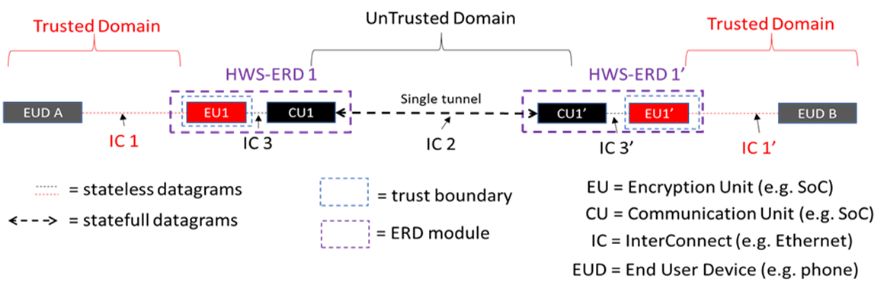

Version: 1.0
2025-05-15
National Information Assurance Partnership
| Version | Date | Comment |
|---|---|---|
| v 1.0 | 2024-12-30 | Initial release |
Assurance | Grounds for confidence that a TOE meets the SFRs [CC]. |
Base Protection Profile (Base-PP) | Protection Profile used as a basis to build a PP-Configuration. |
Collaborative Protection Profile (cPP) | A Protection Profile developed by international technical communities and approved by multiple schemes. |
Common Criteria (CC) | Common Criteria for Information Technology Security Evaluation (International Standard ISO/IEC 15408). |
Common Criteria Testing Laboratory | Within the context of the Common Criteria Evaluation and Validation Scheme (CCEVS), an IT security evaluation facility accredited by the National Voluntary Laboratory Accreditation Program (NVLAP) and approved by the NIAP Validation Body to conduct Common Criteria-based evaluations. |
Common Evaluation Methodology (CEM) | Common Evaluation Methodology for Information Technology Security Evaluation. |
Distributed TOE | A TOE composed of multiple components operating as a logical whole. |
Extended Package (EP) | A deprecated document form for collecting SFRs that implement a particular protocol, technology, or functionality. See Functional Packages. |
Functional Package (FP) | A document that collects SFRs for a particular protocol, technology, or functionality. |
Operational Environment (OE) | Hardware and software that are outside the TOE boundary that support the TOE functionality and security policy. |
Protection Profile (PP) | An implementation-independent set of security requirements for a category of products. |
Protection Profile Configuration (PP-Configuration) | A comprehensive set of security requirements for a product type that consists of at least one Base-PP and at least one PP-Module. |
Protection Profile Module (PP-Module) | An implementation-independent statement of security needs for a TOE type complementary to one or more Base-PPs. |
Security Assurance Requirement (SAR) | A requirement to assure the security of the TOE. |
Security Functional Requirement (SFR) | A requirement for security enforcement by the TOE. |
Security Target (ST) | A set of implementation-dependent security requirements for a specific product. |
Target of Evaluation (TOE) | The product under evaluation. |
TOE Security Functionality (TSF) | The security functionality of the product under evaluation. |
TOE Summary Specification (TSS) | A description of how a TOE satisfies the SFRs in an ST. |
Address Space Layout Randomization (ASLR) | An anti-exploitation feature which loads memory mappings into unpredictable locations. ASLR makes it more difficult for an attacker to redirect control to code that they have introduced into the address space of an application process. |
Application (app) | Software that runs on a platform and performs tasks on behalf of the user or owner of the platform, as well as its supporting documentation. The terms TOE and application are interchangeable in this document. |
Application Programming Interface (API) | A specification of routines, data structures, object classes, and variables that allows an application to make use of services provided by another software component, such as a library. APIs are often provided for a set of libraries included with the platform. |
Communication Unit (CU) | A lightweight computing device that acts as both a retransmission device and a boundary. The RD sits between an EUD and the untrusted transport network. The interconnect between the EUD and the RD is always a wired connection.Review definition for accuracy. |
Credential | Data that establishes the identity of a user, (e.g., a cryptographic key or password). |
Data Execution Prevention (DEP) | An anti-exploitation feature of modern operating systems executing on modern computer hardware, which enforces a non-execute permission on pages of memory. DEP prevents pages of memory from containing both data and instructions, which makes it more difficult for an attacker to introduce and execute code. |
Developer | An entity that writes application software. For the purposes of this document, vendors and developers are the same. |
Encryption Unit (EU) | An RD with the additional capability to encrypt all traffic from the EUD through the LAN interface to form an encrypted tunnel to another encryption end-point through the ERD’s WAN interface. Review definition for accuracy. |
Hardware Separated Encrypting Retransmission Device (HWS-ERD) | An HWS-ERD will encrypt traffic between two endpoints while maintaining a defined physical and logical protocol break between the trusted and the untrusted trusted domains. The protocol break will be both physically and logically enforced. |
Mobile Code | Software transmitted from a remote system for execution within a limited execution environment on the local system. Typically, there is no persistent installation and execution begins without the user's consent or even notification. Examples of mobile code technologies include JavaScript, Java applets, Adobe Flash, and Microsoft Silverlight. |
Operating System (OS) | Software that manages hardware resources and provides services for applications. |
Personally Identifiable Information (PII) | Any information about an individual maintained by an agency, including, but not limited to, education, financial transactions, medical history, and criminal or employment history and information which can be used to distinguish or trace an individual's identity, such as their name, social security number, date and place of birth, mother’s maiden name, biometric records, etc., including any other personal information which is linked or linkable to an individual. [OMB] |
Platform | The environment in which application software runs. The platform can be an operating system, hardware environment, a software based execution environment, or some combination of these. These types of platforms may also run atop other platforms. |
Sensitive Data | Sensitive data may include all user or enterprise data or may be specific application data such as emails, messaging, documents, calendar items, and contacts. Sensitive data must minimally include PII, credentials, and keys. Sensitive data shall be identified in the application’s TSS by the ST author. |
Stack Cookie | An anti-exploitation feature that places a value on the stack at the start of a function call, and checks that the value is the same at the end of the function call. This is also referred to as Stack Guard, or Stack Canaries. |
Vendor | An entity that sells application software. For purposes of this document, vendors and developers are the same. Vendors are responsible for maintaining and updating application software. |

If this feature is implemented by the TOE, the following requirements must be claimed in the ST:
If this feature is implemented by the TOE, the following requirements must be claimed in the ST:
If this feature is implemented by the TOE, the following requirements must be claimed in the ST:
If this feature is implemented by the TOE, the following requirements must be claimed in the ST:
If this feature is implemented by the TOE, the following requirements must be claimed in the ST:
If this feature is implemented by the TOE, the following requirements must be claimed in the ST:
| SFR | CU | EU | Mandatory (M), Objective (Ob), Optional (Op), Selection-Based (SB) |
|---|---|---|---|
| FAU_GEN.1 Audit Data Generation | X | X | M |
| FAU_SAR.1 Audit Review | X | X | M |
| FAU_STG.1 Audit Data Storage Location | |||
| FAU_STG.2 Protected Audit Trail Storage | X | X | M |
| FAU_STG.5 Prevention of Audit Data Loss | X | X | M |
| FCO_NRO.1 Selective Proof of Origin | X | O | |
| FCO_NRR.1 Selective Proof of Receipt | X | X | O |
| FCS_CKM.1/AKG Cryptographic Key Generation - Asymmetric Key | X | SB | |
| FCS_CKM.1/SKG Cryptographic Key Generation - Symmetric Key | X | X | SB |
| FCS_CKM.2 Cryptographic Key Distribution | X | SB | |
| FCS_CKM.6 Timing and Event for Cryptographic Key Destruction | X | X | M |
| FCS_CKM_EXT.7 Cryptographic Key Agreement | X | SB | |
| FCS_COP.1/AEAD Cryptographic Operation - Authenticated Encryption with Associated Data | X | X | SB |
| FCS_COP.1/CMAC Cryptographic Operation - CMAC | X | SB (FCS_CKM.5.1, FCS_STG_EXT.3.1) | |
| FCS_COP.1/Hash Cryptographic Operation - Hashing | X | X | SB |
| FCS_COP.1/KeyedHash Cryptographic Operation - Keyed Hash | X | X | SB |
| FCS_COP.1/KeyEncap Cryptographic Operation - Key Encapsulation | X | SB | |
| FCS_COP.1/KeyWrap Cryptographic Operation - Hashing | X | X | SB |
| FCS_COP.1/SigGen Cryptographic Operation - Signature Generation | X | SB | |
| FCS_COP.1/SigVer Cryptographic Operation - Signature Verification | X | X | SB |
| FCS_COP.1/SKC Cryptographic Operation - Symmetric Key Encryption and Decryption | X | X | SB |
| FCS_COP.1/XOF Cryptographic Operation - Extendable-Output Function | X | X | SB |
| FCS_RBG.1 Random Bit Generation (RBG) | |||
| FCS_RBG.2 Random Bit Generation (External Seeding) | X | X | SB |
| FCS_RBG.3 Random Bit Generation (Internal Seeding - Single Source | X | X | SB |
| FCS_RBG.4 Random Bit Generation (Internal Seeding - Multiple Sources) | X | X | SB |
| FCS_RBG.5 Random Bit Generation (Combining Entropy Sources) | X | X | SB |
| FCS_RBGH.6 Random Bit Generation Service | X | X | SB |
| FCS_STG_EXT.1 Protected Storage | X | X | M |
| FCS_STG_EXT.2 Encrypted Cryptographic Key Storage | X | X | SB (FCS_STG_EXT.1.1) |
| FCS_STG_EXT.3 Key Integrity Protection | X | X | SB (FCS_STG_EXT.1.1) |
| FDP_IFC.2 Complete Information Flow Control | X | X | M - EUs, O - CUs |
| FDP_IFF.1 Information Flow Control Functions | X | X | M - EUs, O - CUs |
| FDP_ITC_EXT.1 Key/Credential Import | X | X | SB (FCS_STG_EXT.1.2 |
| FDP_STG_EXT.1 User Data Storage | X | X | M |
| FIA_AFL_EXT.1 Authentication Failure Handling Review App Notes | X | X | SB |
| FIA_PMG_EXT.1 Password Management | X | X | M |
| FIA_PSK_EXT.1 Pre-Shared Key Composition | X | X | SB (IPsec only) |
| FIA_TRT_EXT.1 Authentication Throttling | X | X | M |
| FIA_UAU.5 Multiple Authentication Mechanisms | X | X | SB |
| FIA_UAU.7 Protected Authentication Feedback | X | X | SB |
| FIA_UAU_EXT.1 Authentication for Cryptographic Operation | X | X | SB |
| FIA_UAU_EXT.2 Timing of Authentication | X | X | M |
| FMT_MOF1 Management of Security FUnctions Behavior | X | X | M |
| FMT_MSA.3 Static Attributes | X | X | O |
| FMT_SMF.1 Specification of Management Functions | X | X | M |
| FMT_SMR.1 Security Roles | X | X | M |
| FPT_APW_EXT.1 Protection of Administrator Password | X | X | M |
| FPT_BBD_EXT.1 Application Processor Mediation | X | M | |
| FPT_FLS.1 Failure with Preservation of Secure State | X | X | SB |
| FPT_INI.1 TSF Initialization | X | X | M |
| FPT_JTA_EXT.1 JTAG Disablement | X | X | M |
| FPT_KST_EXT.1 Key Storage | X | X | M |
| FPT_KST_EXT.2 No Key Transmission | X | X | M |
| FPT_KST_EXT.3 No Plaintext Key Export | X | X | M |
| FPT_NOT_EXT.1 Self-Test Notification | X | X | M |
| FPT_PHP.1 Passive Detection of Physical Attack | X | X | M |
| FPT_PHP.2 Notification of Physical Attack | X | X | Ob |
| FPT_PHP.3 Resistance to Physical Attack | X | X | Ob |
| FPT_PPF_EXT.1 Protection of Platform Firmware and Critical Data | X | X | M |
| FPT_RBP_EXT.1 Rollback Protection | X | X | M |
| FPT_RCV.2 Automated Recovery | X | X | M |
| FPT_ROT_EXT.1 Platform Integrity Root | X | X | M |
| FPT_ROT_EXT.2 Platform Integrity Extension | X | X | M |
| FPT_RUL_EXT.1 Packet Filtering Rules | X | X | M |
| FPT_RUL_EXT.1 Packet Filtering Rules | X | X | M |
| FPT_RVR_EXT.1 Platform Firmware Recovery | X | X | SB |
| FPT_SKP_EXT.1 Protection of TSF Data (for reading of all symmetric keys) | X | X | M |
| FPT_STM.1 Reliable Time Stamps | X | X | M |
| FPT_TST.1 TSF Self-Test | X | M | |
| FPT_TST_EXT.1 TSF Testing | X | X | M |
| FPT_TUD_EXT.1 TOE Firmware Update | X | X | M |
| FPT_TUD_EXT.2 Platform Firmware Authenticated Update Mechanism | X | X | SB |
| FPT_TUD_EXT.3 Platform Firmware Delayed - Authentication Update Mechanism | X | X | SB |
| FPT_TUD_EXT.4 Secure Local Platform Firmware Update Mechanism | X | X | SB |
| FTA_SSL.3 TSF-Initiated Termination | X | X | M |
| FTA_SSL.4 User-Initiated Termination | X | X | M |
| FTA_SSL_EXT.1 TSF- and TSF-Initiated Session Blocking Review verbiage | X | X | M |
| FTA_TAB.1 Default TOE Access Banners | X | X | M |
| FTP_ITC.1 Inter-TSF Trusted Channel | X | ||
| FTP_ITC_EXT.1 Physically Protected Channel Review offload audit data or if the platform is administered remotely | SB | ||
| FTP_ITC_EXT.1/IPsec Trusted Channel Communication Review App Notes | X (IPsec) | SB | |
| FTP_ITC_EXT.1/MACsec Trusted Channel Communication - MACsec | X (MACsec) | SB | |
| FTP_ITC_EXT.1/VPN Trusted Channel Communication (VPN Communications) | |||
| FTP_ITC_EXT.1/WLAN Trusted Channel Communication (Wireless LAN) | X (WLAN, EU-only) | SB | |
| FTP_ITP_EXT.1 Physically Protected Channel Review | X | X | |
| FTP_TRP.1 Trusted Path | SB (FMT_SMF.1.1) |
| Assumption or OSP | Security Objectives | Rationale |
| A.TBD | OE.TBD | TBD |
| Requirement | Auditable Events | Additional Audit Record Contents |
|---|---|---|
| FAU_GEN.1 | ||
| No events specified | N/A | |
| FAU_SAR.1 | ||
| No events specified | N/A | |
| FAU_STG.1 | ||
| On failure of logging function, capture record of failure and record upon restart of logging function. | None. | |
| FAU_STG.2 | ||
| No events specified | N/A | |
| FAU_STG.5 | ||
| Audit trail full. Overwrite of audit records is commencing. | None | |
| FCO_NRO.1 | ||
| TBD | No additional information | |
| FCO_NRR.1 | ||
| TBD | No additional information | |
| FCS_STG_EXT.1 | ||
| No events specified | N/A | |
| FDP_IFC.2 | ||
| TBD | No additional information | |
| FDP_IFF.1 | ||
| TBD | No additional information | |
| FDP_STG_EXT.1 | ||
| Addition or removal of certificate from Trust Anchor Database | Subject name of certificate | |
| FIA_PMG_EXT.1 | ||
| Needs to be completed. | No additional information | |
| FIA_PSK_EXT.1 | ||
| TBD | No additional information | |
| FIA_TRT_EXT.1 | ||
| No events specified | N/A | |
| FIA_UAU_EXT.2 | ||
| Action performed before authentication. | No additional information | |
| FMT_MOF.1 | ||
| No events specified | N/A | |
| FMT_MSA.3 | ||
| TBD | No additional information | |
| FMT_SMF.1 | ||
| No events specified | N/A | |
| FMT_SMR.1 | ||
| No events specified | N/A | |
| FPF_RUL_EXT.1 | ||
| No events specified | N/A | |
| FPT_APW_EXT.1 | ||
| No events specified | N/A | |
| FPT_BBD_EXT.1 | ||
| No events specified | N/A | |
| FPT_INI.1 | ||
| TBD | No additional information | |
| FPT_JTA_EXT.1 | ||
| No events specified | N/A | |
| FPT_KST_EXT.1 | ||
| No events specified | N/A | |
| FPT_KST_EXT.2 | ||
| No events specified | N/A | |
| FPT_KST_EXT.3 | ||
| No events specified | N/A | |
| FPT_NOT_EXT.1 | ||
| [selection, choose one of: Measurement of TSF software, none] | [selection, choose one of: Integrity verification value, No additional information] | |
| FPT_PHP.1 | ||
| [selection: Detection of intrusion., None] | None. | |
| FPT_PHP.2 | ||
| [selection: Detection of intrusion., None] | None. | |
| FPT_PHP.3 | ||
| Detection of attempted intrusion. | None. | |
| FPT_PPF_EXT.1 | ||
| No events specified | N/A | |
| FPT_RCV.2 | ||
| TBD | No additional information | |
| FPT_ROT_EXT.1 | ||
| No events specified | N/A | |
| FPT_ROT_EXT.2 | ||
| [selection: Failure of integrity verification, None] | None | |
| FPT_SEP_EXT.1 | ||
| TBD | No additional information | |
| FPT_SKP_EXT.1 | ||
| No events specified | N/A | |
| FPT_STM.1 | ||
| No events specified | N/A | |
| FPT_TST.1 | ||
| Needs to be completed. | No additional information | |
| FPT_TST_EXT.1 | ||
| Initiation of self-test | No additional information | |
| Failure of self-test | [selection, choose one of: Algorithm that caused the failure, No additional information] | |
| FPT_TUD_EXT.1 | ||
| No events specified | N/A | |
| FTA_SSL.3 | ||
| TBD | No additional information | |
| FTA_SSL.4 | ||
| TBD | No additional information | |
| FTA_SSL_EXT.1 | ||
| No events specified | N/A | |
| FTA_TAB.1 | ||
| No events specified | N/A | |
| FTP_ITC.1 | ||
| TBD | No additional information | |
| FTP_ITP_EXT.1 | ||
| Needs to be completed. | No additional information |
| Requirement | Auditable Events | Additional Audit Record Contents |
|---|
| Requirement | Auditable Events | Additional Audit Record Contents |
|---|---|---|
| FAU_GEN.1/PFED | ||
| TBD | No additional information | |
| FAU_GEN.2/PFED | ||
| TBD | No additional information | |
| FAU_STG.1/PFED | ||
| TBD | No additional information | |
| FCS_CKM.1/PFEDAKG | ||
| TBD | No additional information | |
| FCS_CKM.1/SK | ||
| TBD | No additional information | |
| FCS_CKM.2/PFED | ||
| TBD | No additional information | |
| FCS_CKM.5/PFED | ||
| TBD | No additional information | |
| FCS_CKM.6 | ||
| No events specified | N/A | |
| FCS_CKM.6/PFED | ||
| TBD | No additional information | |
| FCS_COP.1/PFEDAES | ||
| TBD | No additional information | |
| FCS_COP.1/PFEDHash | ||
| TBD | No additional information | |
| FCS_COP.1/PFEDKeyEncap | ||
| TBD | No additional information | |
| FCS_COP.1/PFEDSigGen | ||
| TBD | No additional information | |
| FCS_COP.1/PFEDSigVer | ||
| TBD | No additional information | |
| FCS_REC_EXT.1/PFED | ||
| TBD | No additional information | |
| FCS_REKEY_EXT.1/PFED | ||
| TBD | No additional information | |
| FDP_BRINGUP_EXT.1 | ||
| TBD | No additional information | |
| FDP_IFC.1/CU | ||
| TBD | No additional information | |
| FDP_IFC.1/HWS | ||
| TBD | No additional information | |
| FDP_IFC.1/PFED | ||
| TBD | No additional information | |
| FDP_IFF.1/CU | ||
| TBD | No additional information | |
| FDP_IFF.1/HWS | ||
| TBD | No additional information | |
| FDP_IFF.1/PFED | ||
| TBD | No additional information | |
| FDP_ISO_EXT.1 | ||
| TBD | No additional information | |
| FIA_AFL.1/PFED | ||
| TBD | No additional information | |
| FIA_PSK_EXT.1/PFED | ||
| TBD | No additional information | |
| FIA_UAU.2/PFED | ||
| TBD | No additional information | |
| FIA_UAU.3/PFED | ||
| TBD | No additional information | |
| FMT_SMF.1/PFED | ||
| TBD | No additional information | |
| FPT_DPD_EXT.1 | ||
| TBD | No additional information | |
| FPT_FLS.1/PFED | ||
| TBD | No additional information | |
| FPT_HRT.1/PFED | ||
| TBD | No additional information | |
| FPT_ISO_EXT.1/PFED | ||
| TBD | No additional information | |
| FPT_ITT.1/HWS | ||
| TBD | No additional information | |
| FPT_ITT.1/PFED | ||
| TBD | No additional information | |
| FPT_RCV.1/PFED | ||
| TBD | No additional information | |
| FPT_TRAN_EXT.1/PFED | ||
| TBD | No additional information | |
| FPT_TST.1/PFED | ||
| TBD | No additional information | |
| FTP_ITC.1/MACsec | ||
| This needs to be completed. | No additional information | |
| FTP_ITC.1/PFED | ||
| TBD | No additional information | |
| FTP_TRP.1/PFED | ||
| TBD | No additional information |
| Requirement | Auditable Events | Additional Audit Record Contents |
|---|---|---|
| FCS_CKM.1/AKG | ||
| Needs to be completed. | No additional information | |
| FCS_CKM.1/SKG | ||
| Needs to be completed. | No additional information | |
| FCS_CKM.2 | ||
| Needs to be completed. | No additional information | |
| FCS_COP.1/AEAD | ||
| No events specified | N/A | |
| FCS_COP.1/CMAC | ||
| No events specified | N/A | |
| FCS_COP.1/Hash | ||
| No events specified | N/A | |
| FCS_COP.1/KeyEncap | ||
| No events specified | N/A | |
| FCS_COP.1/KeyWrap | ||
| No events specified | N/A | |
| FCS_COP.1/KeyedHash | ||
| No events specified | N/A | |
| FCS_COP.1/SKC | ||
| No events specified | N/A | |
| FCS_COP.1/SigGen | ||
| No events specified | N/A | |
| FCS_COP.1/SigVer | ||
| No events specified | N/A | |
| FCS_COP.1/XOF | ||
| No events specified | N/A | |
| FCS_HTTPS_EXT.1 | ||
| Failure to establish an HTTPS session |
| |
| Establishment or Termination of an IPsec SA | Non-TOE endpoint of connection (IP address) | |
| FCS_RBG.1 | ||
| Failure of the randomization process | None | |
| FCS_RBG.2 | ||
| Needs to be completed. | No additional information | |
| FCS_RBG.3 | ||
| Needs to be completed. | No additional information | |
| FCS_RBG.4 | ||
| Needs to be completed. | No additional information | |
| FCS_RBG.5 | ||
| Needs to be completed. | No additional information | |
| FCS_RBG.6 | ||
| No events specified | N/A | |
| FCS_STG_EXT.2 | ||
| Needs to be completed. | No additional information | |
| FCS_STG_EXT.3 | ||
| Needs to be completed. | No additional information | |
| FDP_ITC_EXT.1 | ||
| Needs to be completed. | No additional information | |
| FDP_PBR_EXT.1 | ||
| TBD | No additional information | |
| FIA_AFL_EXT.1 | ||
| Failed attempt at Administrator authentication | None | |
| FIA_UAU.5 | ||
| No events specified | N/A | |
| FIA_UAU.7 | ||
| No events specified | N/A | |
| FIA_UAU_EXT.1 | ||
| No events specified | N/A | |
| FIA_UIA_EXT.1 | ||
| All use of the authentication mechanism | Provided user identity, origin of the attempt (e.g. console, remote IP address) | |
| FPT_FLS.1 | ||
| Failure of the TSF | None | |
| FPT_RVR_EXT.1 | ||
| No events specified | N/A | |
| FPT_TUD_EXT.2 | ||
| [selection: Failure of update authentication/integrity check/rollback, None] | Version numbers of the current firmware and of the attempted update | |
| [selection: Failure of update operation, None] | Version numbers of the current firmware and of the attempted update | |
| [selection: Success of update operation, None] | Version numbers of the new and old firmware images | |
| FPT_TUD_EXT.3 | ||
| [selection: Failure of update authentication/integrity/rollback check, None] | Version numbers of the current firmware and of the attempted update | |
| [selection: Failure of update operation, None] | Version numbers of the current firmware and of the attempted update | |
| [selection: Success of update operation, None] | Version numbers of the new and old firmware images | |
| FPT_TUD_EXT.4 | ||
| No events specified | N/A | |
| FTP_ITC_EXT.1 | ||
| Termination of the trusted channel | User ID and remote source (IP Address) if feasible | |
| Failures of the trusted path functions | User ID and remote source (IP Address) if feasible | |
| Initiation of the trusted channel | User ID and remote source (IP Address) if feasible | |
| FTP_ITC_EXT.1/IPsec | ||
| Needs to be completed. | No additional information | |
| FTP_ITC_EXT.1/WLAN | ||
| Needs to be completed. | No additional information | |
| FTP_TRP.1 | ||
| Initiation of the trusted channel | Administrator ID and remote source (IP Address), if feasible | |
| Termination of the trusted channel | Administrator ID and remote source (IP Address), if feasible | |
| Failures of the trusted path functions | User ID and remote source (IP Address), if feasible |
| # | Management Function | Admin | User | Application Notes |
| 1 | Ability to administer the platform [selection: locally, remotely]. | OOptional/Conditional | XNot permitted | Administration is considered “local” if the Administrator is physically present at the GPCP. Administration is considered “remote” if communications between the Administrator and GPCP is over a network. If "locally" is selected, then function 6 is mandatory. If "remotely" is selected, then FTP_TRP.1 must be claimed in the ST and functions 5, 6, and 13 are mandatory. |
| 2 | Ability to configure and manage the audit functionality and audit data. | OOptional/Conditional | XNot permitted | Management of audit data includes the ability to delete it. This Function must be claimed if FAU_GEN.1 is claimed in the ST. |
| 3 | Ability to configure name/address of audit/logging server to which to send audit/logging records. | OOptional/Conditional | XNot permitted | This function must be claimed if FAU_STG.1 is claimed in the ST. |
| 4 | Ability to review audit records. | OOptional/Conditional | XNot permitted | This Function must be claimed if FAU_SAR.1 is claimed in the ST. |
| 5 | Ability to initiate a trusted channel or accept an incoming channel for remote administration. | OOptional/Conditional | XNot permitted | This Function must be claimed if FTP_TRP.1 is claimed in the ST. This function is mandatory when function 1 remote administrator is selected. |
| 6 | Ability to manage authentication credentials for Administrators. | OOptional/Conditional | XNot permitted | This Function must be claimed if FIA_UIA_EXT.1 is claimed in the ST. This function is mandatory when function 1 is selected (local or remote). |
| 7 | Ability to set parameters for allowable number of authentication failures. | OOptional/Conditional | XNot permitted | This Function must be claimed if FIA_AFL_EXT.1 is claimed in the ST. |
| 8 | Ability to configure password length and complexity. | OOptional/Conditional | XNot permitted | This Function must be claimed if FIA_PMG_EXT.1 is claimed in the ST. If password length and complexity are not configurable, then the Administrator Option should be denied. |
| 9 | Ability to configure authentication throttling policy. | OOptional/Conditional | XNot permitted | This Function must be claimed if FIA_TRT_EXT.1 is claimed in the ST. If authentication throttling policy is not configurable, then the Administrator Option should be denied. |
| 10 | Ability to manage authentication methods and change default authorization factors. | OOptional/Conditional | XNot permitted | This Function must be claimed if FIA_UAU.5 is claimed in the ST. If authentication methods are not configurable, then the Administrator Option should be denied. |
| 11 | Ability to configure certificate revocation checking methods. | OOptional/Conditional | XNot permitted | This function must be claimed if FIA_X509_EXT.1 is claimed in the ST (i.e., the TOE claims conformance to . If TOE does not support configuration of certificate revocation checking methods, then the Administrator option should be denied. |
| 12 | Ability to configure TSF behavior when certificate revocation status cannot be determined. | OOptional/Conditional | XNot permitted | This function must be claimed if FIA_X509_EXT.2 is claimed in the ST (i.e., the TOE claims conformance to and the claims made in the SFR indicate that the administrator is allowed to configure how the TSF treats a certificate with undetermined revocation status. |
| 13 | Ability to manage the IPsec reference identifier. | OOptional/Conditional | XNot permitted | This function must be claimed if FCS_IPSEC_EXT.1 is claimed in the ST. This function is mandatory when function 1 remote administrator is selected. |
| 14 | Ability to configure default action to take on boot integrity failure. | OOptional/Conditional | XNot permitted | This Function must be claimed if "in accordance with Administrator-configurable policy" is selected in FPT_ROT_EXT.2.2 or FPT_ROT_EXT.3.2. |
| 15 | Ability to configure default action to take on update failure. | OOptional/Conditional | XNot permitted | This Function must be claimed if FPT_TUD_EXT.2 or FPT_TUD_EXT.3 is claimed in the ST and "in accordance with Administrator-configurable policy" is selected in FPT_TUD_EXT.2.5 or FPT_TUD_EXT.3.4. |
| 16 | Ability to initiate the update process. | OOptional/Conditional | OOptional/Conditional | This Function must be claimed if something other than "no mechanism for platform firmware update" is selected in FPT_TUD_EXT.1.1. |
| 17 | Ability to determine the action to take on update failure. | OOptional/Conditional | OOptional/Conditional | This Function must be claimed if FPT_TUD_EXT.2 or FPT_TUD_EXT.3 are claimed in the ST. |
| 18 | Ability to determine the action to take on integrity check failure. | OOptional/Conditional | OOptional/Conditional | This Function must be claimed if FPT_ROT_EXT.2 or FPT_ROT_EXT.3 is claimed in the ST. The Administrator Option must be selected if "by express determination of an [Administrator]" is selected in FPT_ROT_EXT.2.2 or FPT_ROT_EXT.3.2. The User Option must be selected if "by express determination of an [User]" is selected in FPT_ROT_EXT.2.2 or FPT_ROT_EXT.3.2. |
| 19 | Ability to manage import and export of keys/secrets to and from protected storage. | OOptional/Conditional | XNot permitted | This Function must be claimed if FCS_STG_EXT.1 is claimed in the ST. |
The following rationale provides justification for each SFR for the TOE,
showing that the SFRs are suitable to address the specified threats:
| Threat | Addressed by | Rationale |
|---|
The PP identifies the Security Assurance Requirements (SARs) to frame the extent to which the evaluator assesses the documentation applicable for the evaluation and performs independent testing.
This section lists the set of SARs from CC part 3 that are required in evaluations against this PP. Individual Evaluation Activities (EAs) to be performed are specified both in Section 5 Security Requirements as well as in this section. These SARs were chosen based on the notion that a hypothetical attacker of the TOE lacks administrative privilege on its platform but otherwise has persistent access to the TOE itself and the sophistication to interact with the platform in a way that they can attempt to access stored data without authorization or to run tools that automate more sophisticated malicious activity.
The general model for evaluation of TOEs against STs written to conform to this PP is as follows:
After the ST has been approved for evaluation, the CCTL will obtain the TOE, supporting environmental IT, and the administrative/user guides for the TOE. The CCTL is expected to perform actions mandated by the Common Evaluation Methodology (CEM) for the ASE and ALC SARs. The CCTL also performs the evaluation activities contained within Section 5 Security Requirements, which are intended to be an interpretation of the other CEM assurance requirements as they apply to the specific technology instantiated in the TOE. The evaluation activities that are captured in Section 5 Security Requirements also provide clarification as to what the developer needs to provide to demonstrate the TOE is compliant with the PP. The results of these activities will be documented and presented (along with the administrative guidance used) for validation.
This PP does not define any Objective requirements.
| Identifier | Cryptographic algorithm | Cryptographic parameters | List of standards |
|---|---|---|---|
| DH | Finite Field Cryptography Diffie-Hellman | Static domain parameters approved for [selection:
|
NIST SP 800-56A Revision 3 (Section 5.7.1.1) [DH] [selection: RFC 3526 [IKE groups], RFC 7919 [TLS groups]] |
| ECDH | Elliptic Curve Diffie-Hellman | Elliptic Curve [selection: P-384, P-521] | NIST SP 800-56A Revision 3 (Section 5.7.1.2) [ECDH] NIST SP 800-186 (Section 3.2.1) [NIST Curves] |
As indicated in the introduction to this PP, the baseline requirements (those that must be performed by the TOE or its underlying platform) are contained in the body of this PP. There are additional requirements based on selections in the body of the PP: if certain selections are made, then additional requirements below must be included.
This component may also be included in the ST as if optional.
| Identifier | Cryptographic key generation algorithm | Cryptographic algorithm parameters | List of standards |
|---|---|---|---|
| RSA | RSA | Modulus of size [selection: 3072, 4096, 6144, 8192] bits | NIST FIPS PUB 186-5 (Section A.1.1) |
| ECC-ERB | ECC-ERB - Extra Random Bits | Elliptic Curve [selection: P-384, P-521] | FIPS PUB 186-5 (Section A.2.1) NIST SP 800-186 (Section 3) [NIST Curves] |
| ECC-RS | ECC-RS - Rejection Sampling | Elliptic Curve [selection: P-384, P-521] | FIPS PUB 186-5 (Section A.2.2) NIST SP 800-186 (Section 3) [NIST Curves] |
| FFC-ERB | FFC-ERB - Extra Random Bits | Static domain parameters approved for [selection:
|
NIST SP 800-56A Revision 3 (Section 5.6.1.1.3) [key pair generation] [selection: RFC 3526 [IKE groups], RFC 7919 [TLS groups]] |
| FFC-RS | FFC-RS - Rejection Sampling | Static domain parameters approved for [selection:
|
NIST SP 800-56A Revision 3 (Section 5.6.1.1.3) [key pair generation] [selection: RFC 3526 [IKE groups], RFC 7919 [TLS groups]] |
| LMS | LMS | Private key size = [selection: ] Winternitz parameter = [selection: 1, 2, 4, 8] Tree height = [selection: 5, 10, 15, 20, 25] | RFC 8554 [LMS] NIST SP 800-208 [parameters] |
| ML-KEM | ML-KEM KeyGen | Parameter set = ML-KEM-1024 | NIST FIPS 203 (Section 7.1) |
| ML-DSA | ML-DSA KeyGen | Parameter set = ML-DSA-87 | NIST FIPS 204 (Section 5.1) |
| XMSS | XMSS | Private key size = [selection: ] Tree height = [selection: 10, 16, 20] | RFC 8391 [XMSS] NIST SP 800-208 [parameters] |
This component may also be included in the ST as if optional.
| Identifier | Cryptographic Key Generation Algorithm | Cryptographic Key Sizes | List of standards |
|---|---|---|---|
| RSK | Direct Generation from a Random Bit Generator as specified in FCS_RBG.1 | [selection: 256, 384, 512] bits | NIST SP 800-133 Revision 2 (Section 6.1)[Direct generation of symmetric keys] |
This component may also be included in the ST as if optional.
If "key encapsulation" is selected, FCS_COP.1/KeyEncap must be claimed, which specifies the relevant list of standards.
If "key wrapping" is selected, FCS_COP.1/KeyWrap must be claimed, which specifies the relevant list of standards.
If "encrypted channels" is selected, FTP_ITC_EXT.1 must be claimed.
For the purposes of this requirement, keying material refers to authentication data, passwords, secret/private symmetric keys, private asymmetric keys, data used to derive keys, values derived from passwords, etc. “Plaintext keying material” may refer to a KEK that is used to encrypt other keying material. Destruction of encrypted keying material may be accomplished by destroying the KEK used to encrypt it. If different mechanisms are used for destroying different keying material, all relevant claims should be selected and the TSS should identify which keying material is destroyed by which mechanism.
Key storage areas in non-volatile storage can be overwritten with any value that renders the keys unrecoverable. The value used can be all zeroes, all ones, or any other pattern or combination of values significantly different than the value of the key itself. When ‘a value that does not contain any CSP’ is chosen, it means that the TOE uses some other specified data not drawn from a source that may contain keying material or reveal information about it or any other TSF-protected data. In other words, the data used for overwriting is carefully selected and not taken from a general ‘pool’ that might contain current or residual data that itself requires confidentiality protection. If multiple copies exist, all copies must be destroyed.
This component may also be included in the ST as if optional.
| Identifier | Cryptographic algorithm | Cryptographic key sizes | List of standards |
|---|---|---|---|
| AES-CCM | AES in CCM mode with unpredictable, non-repeating nonce, minimum size of 64 bits | 256 bits | [selection: ISO/IEC 18033-3:2010 (Subclause 5.2), FIPS PUB 197] [AES] [selection: ISO/IEC 19772:2020 (Clause 7), NIST SP 800-38C] [CCM] |
| AES-GCM | AES in GCM mode with non-repeating IVs using [selection: deterministic, RBG-based], IV construction; the tag must be of length [selection: 96, 104, 112, 120, 128] bits. | 256 bits | [selection: ISO/IEC 18033-3:2010 (Subclause 5.2), FIPS PUB 197] [AES] [selection: ISO/IEC 19772:2020 (Clause 10), NIST SP 800-38D] [GCM] |
This component may also be included in the ST as if optional.
| Identifier | Cryptographic algorithm | Cryptographic key sizes | List of standards |
|---|---|---|---|
| AES-CMAC | AES using CMAC mode | 256 bits | [selection: ISO/IEC 18033-3:2010 (Subclause 5.2), FIPS PUB 197] [AES] [selection: : ISO/IEC 9797-1:2011 Subclause 7.6, NIST SP 800-38B] [CMAC] |
This component may also be included in the ST as if optional.
This component may also be included in the ST as if optional.
| Keyed Hash Algorithm | Cryptographic key sizes | List of standards |
|---|---|---|
| HMAC-SHA-256 | 256 bits | [selection: ISO/IEC 9797-2:2021 (Section 7 “MAC Algorithm 2”), FIPS PUB 198-1] |
| HMAC-SHA-384 | [selection: 384 (ISO, FIPS), 256 (FIPS)] bits | [selection: ISO/IEC 9797-2:2021 (Section 7 “MAC Algorithm 2”), FIPS PUB 198-1] |
| HMAC-SHA-512 | [selection: 512 (ISO, FIPS), 384 (FIPS), 256 (FIPS)] bits | [selection: ISO/IEC 9797-2:2021 (Section 7 “MAC Algorithm 2”), FIPS PUB 198-1] |
| Identifier | Cryptographic algorithm | Cryptographic key sizes | List of standards |
|---|---|---|---|
| ML-KEM | ML-KEM | Parameter set = ML-KEM-1024 | NIST FIPS 203 |
| Identifier | Cryptographic algorithm | Cryptographic key sizes | List of standards |
|---|---|---|---|
| AES-KW | AES in KW mode | 256 bits | [selection: ISO/IEC 18033-3:2010 (Subclause 5.2), FIPS PUB 197] [AES] [selection: ISO/IEC 19772:2020 (clause 6), NIST SP 800-38F (Section 6.2)] [KW mode] |
| AES-KWP | AES in KWP mode | 256 bits | [selection: ISO/IEC 18033-3:2010 (Subclause 5.2), FIPS PUB 197] [AES] NIST SP 800-38F (Section 6.3) [KWP mode] |
| AES-CCM | AES in CCM mode with unpredictable, non-repeating nonce, minimum size of 64 bits | 256 bits | [selection: ISO/IEC 18033-3:2010 (Subclause 5.2), FIPS PUB 197] [AES] [selection: ISO/IEC 19772:2020 (Clause 7), NIST SP 800-38C] [CCM] |
| AES-GCM | AES in GCM mode with non-repeating IVs using [selection: deterministic, RBG-based], IV construction; the tag must be of length [selection: 96, 104, 112, 120, 128] bits. | 256 bits | [selection: ISO/IEC 18033-3:2010 (Subclause 5.2), FIPS PUB 197] [AES] [selection: ISO/IEC 19772:2020 (Clause 10), NIST SP 800-38D] [GCM] |
This component may also be included in the ST as if optional.
| Identifier | Cryptographic algorithm | Cryptographic key sizes | List of standards |
|---|---|---|---|
| RSA-PKCS | RSASSA-PKCS1-v1_5 | Modulus of size [selection: 3072, 4096, 6144, 8192] bits, hash [selection: SHA-384, SHA-512] | RFC 8017 (Section 8.2) [PKCS #1 v2.2] FIPS PUB 186-5 (Section 5.4) [RSASSA-PKCS1-v1_5] |
| RSA-PSS | RSASSA-PSS | Modulus of size [selection: 3072, 4096, 6144, 8192] bits, hash [selection: SHA-384, SHA-512], Salt Length (sLen) such that [assignment: 0 ≤ sLen ≤ hLen (Hash Output Length)] and Mask Generation Function = MGF1 | RFC 8017 (Section 8.1) [PKCS#1 v2.2] FIPS PUB 186-5 (Section 5.4) [RSASSA-PSS] |
| ECDSA | ECDSA | Elliptic Curve [selection: P-384, P-521], per-message secret number generation [selection: extra random bits, rejection sampling, deterministic] and hash function using[selection: SHA-384, SHA-512] | [selection: ISO/IEC 14888-3:2018 (Subclause 6.6), FIPS PUB 186-5 (Sections 6.3.1, 6.4.1]][ECDSA] NIST SP-800 186 (Section 4) [NIST Curves] |
| LMS | LMS | Private key size = [selection: ] Winternitz parameter = [selection: 1, 2, 4, 8] Tree height = [selection: 5, 10, 15, 20, 25] | RFC 8554 [LMS] NIST SP 800-208 [parameters] |
| ML-DSA | ML-DSA Signature Generation | Parameter set = ML-DSA-87 | NIST FIPS 204 (Section 5.2) |
| XMSS | XMSS | Private key size = [selection: ] Tree height = [selection: 10, 16, 20] | RFC 8391 [XMSS] NIST SP 800-208 [parameters] |
This component may also be included in the ST as if optional.
| Identifier | Cryptographic algorithm | Cryptographic key sizes | List of standards |
|---|---|---|---|
| RSA-PKCS | RSASSA-PKCS1-v1_5 | Modulus of size [selection: 3072, 4096, 6144, 8192] bits and hash[selection: SHA-384, SHA-512] | RFC 8017 (Section 8.2) [PKCS #1 v2.2] FIPS PUB 186-5 (Section 5.4) [RSASSA-PKCS1-v1_5] |
| RSA-PSS | RSASSA-PSS | Modulus of size [selection: 3072, 4096, 6144, 8192] bits and hash[selection: SHA-384, SHA-512] | RFC 8017 (Section 8.1) [PKCS#1 v2.2] FIPS PUB 186-5 (Section 5.4) [RSASSA-PSS] |
| ECDSA | ECDSA | Elliptic Curve [selection: P-384, P-521] using hash [selection: SHA-384, SHA-512] | [selection: ISO/IEC 14888-3:2018 (Subclause 6.6), FIPS PUB 186-5 (Section 6.4.2)][ECDSA] NIST SP-800 186 (Section 4) [NIST Curves] |
| LMS | LMS | Private key size = [selection: ] Winternitz parameter = [selection: 1, 2, 4, 8] Tree height = [selection: 5, 10, 15, 20, 25] | RFC 8554 [LMS] NIST SP 800-208 [parameters] |
| XMSS | XMSS | Private key size = [selection: ] Tree height = [selection: 10, 16, 20] | RFC 8391 [XMSS] NIST SP 800-208 [parameters] |
| ML-DSA | ML-DSA Signature Verification | Parameter set = ML-DSA-87 | NIST FIPS 204 (Section 5.3) |
This component may also be included in the ST as if optional.
| Identifier | Cryptographic Algorithm | Cryptographic Key Sizes | List of Standards |
|---|---|---|---|
| AES-CBC | AES in CBC mode with non-repeating and unpredictable IVs | 256 bits | [selection: ISO/IEC 18033-3:2010 (Subclause 5.2), FIPS PUB 197] [AES][selection: ISO/IEC 10116:2017 (Clause 7), NIST SP 800-38A] [CBC] |
| AES-CTR | AES in Counter Mode with a non-repeating initial counter and with no repeated use of counter values across multiple messages with the same secret key | 256 bits | [selection: ISO/IEC 18033-3:2010 (Subclause 5.2), FIPS PUB 197] [AES][selection: : ISO/IEC 10116:2017 (Clause 10), NIST SP 800-38A] [CBC] |
| XTS-AES | AES in XTS mode with unique tweak values that are consecutive non-negative integers starting at an arbitrary non-negative integer | 512 bits | [selection: ISO/IEC 18033-3:2010 (Subclause 5.2), FIPS PUB 197] [AES][selection: IEEE Std. 1619-2018, NIST SP 800-38E] [XTS] |
| Cryptographic Algorithm | Parameters | List of Standards |
|---|---|---|
| SHAKE | Functions = [SHAKE256] | NIST FIPS PUB 202 Section 6.2 [SHAKE] |
This component may also be included in the ST as if optional.
| Identifier | DRBG Algorithm | List of standards |
|---|---|---|
| HASH_DRBG | Hash_DRBG with [selection: SHA-384, SHA-512] | [selection: ISO/IEC 18031: 2011 (Section C.2.2), NIST SP 800-90A Revision 1 Section 10.1.1] |
| HMAC_DRBG | HMAC_DRBG with [selection: SHA-384, SHA-512] | [selection: ISO/IEC 18031: 2011 (Section C.2.3), NIST SP 800-90A Revision 1 Section 10.1.2] |
| CTR_DRBG | CTR_DRBG with AES-CTR-256 | [selection: ISO/IEC 18031: 2011 (Section C.3.2), NIST SP800-90A Revision 1 Section 10.2.1] |
For the selection in this requirement, the ST author selects "TSF entropy source" if a single entropy source is used as input to the DRBG. The ST author selects "multiple TSF entropy sources" if a seed is formed from a combination of two or more entropy sources within the TOE boundary. If the TSF implements two or more separate DRBGs that are seeded in separate manners, this SFR should be iterated for each DRBG. If multiple distinct entropy sources exist such that each DRBG only uses one of them, then each iteration would select "TSF entropy source"; "multiple TSF entropy sources" is only selected if a single DRBG uses multiple entropy sources for its seed. The ST author selects "TSF interface for seeding" if entropy source data is generated outside the TOE boundary.
If TSF entropy sources" is selected, FCS_RBG.3 must be claimed.
If "multiple TSF entropy sources" is selected, FCS_RBG.4 and FCS_RBG.5 must be claimed.
If "TSF interface for seeding" is selected, FCS_RGB.2 must be claimed.
The security strength of the entropy used for seeding depends on the functions for which the TSF uses entropy. The security strength for the various functions is defined in Tables 2 and 3 of NIST SP 800-57A.
If a reseeding is selected in the first selection and something other than “never” is selected in the third selection of FCS_RBG.1.3, but reseeding is not feasible, the TSF will uninstantiate RBGs, rather than produce output that is of insufficient quality. The listed standards should specify the reseed interval and procedure for uninstantiating and reseeding. The remaining selection allows the PP Author to require application-specific conditions for reseeding.
"Uninstantiate” means that the internal state of the DRBG is no longer available for use. In the second selection of FCS_RBG.1.3, “on demand” means that a TOE presents an interface to reseed as a TSFI (e.g., an API call). The interface causes the DRBG to reseed at the request of an authorized user, either with an internal source, an external source, or from input provided through the TSFI (e.g., the API call).
This component may also be included in the ST as if optional.
| Functional Class | Functional Components |
|---|---|
| Class FCS: Cryptographic Support | FCS_CKM_EXT Cryptographic Key Management FCS_HTTPS_EXT HTTPS Protocol FCS_REC_EXT Key Recovery FCS_REKEY_EXT Periodic Rekey FCS_STG_EXT Key Storage and Protection |
| Class FDP: User Data Protection | FDP_BRINGUP_EXT Secure Bring-Up FDP_ISO_EXT Communications Unit Layer-2 Isolation Enforcement FDP_ITC_EXT Key/Credential Import FDP_PBR_EXT Protocol Break Enforcement FDP_STG_EXT User Data Storage |
| Class FIA: Identification and Authentication | FIA_AFL_EXT Authentication Failure Handling FIA_PMG_EXT Password Management FIA_PSK_EXT Pre-Shared Key Composition FIA_TRT_EXT Authentication Throttling FIA_UAU_EXT User Authentication FIA_UIA_EXT Administrator Authentication |
| Class FPF: Packet Filtering | FPF_RUL_EXT Packet Filtering |
| Class FPT: Protection of the TSF | FPT_APW_EXT Protection of Administrator Password FPT_BBD_EXT Baseband Processing FPT_DPD_EXT Baseband Processing FPT_ISO_EXT EU and CU Isolation FPT_JTA_EXT JTAG Disablement FPT_KST_EXT Key Storage FPT_NOT_EXT Self-Test Notification FPT_PPF_EXT Protection of Platform Firmware FPT_RBP_EXT Rollback Protection FPT_ROT_EXT Platform Integrity FPT_RVR_EXT Platform Firmware Recovery FPT_SEP_EXT Hardware-Enforced Separation Between TOE Subsystems FPT_SKP_EXT Protection of TSF Data FPT_TRAN_EXT Transaction Control FPT_TST_EXT TSF Testing FPT_TUD_EXT Trusted Updates |
| Class FTA: TOE Access | FTA_SSL_EXT Session Locking and Termination |
| Class FTP: Trusted Path/Channel | FTP_ITC_EXT Trusted Channel Communications FTP_ITP_EXT Physically Protected Channel |
FCS_CKM_EXT.7, Cryptographic Key Agreement, requires that cryptographic key agreement be performed in accordance with specified standards.
There are no management functions foreseen.
The following actions should be auditable if FAU_GEN Security audit data generation is included in the PP, PP-Module, functional package or ST:
| Hierarchical to: | No other components. |
| Dependencies to: |
[FDP_ITC.1 Import of user data without security attributes, or FDP_ITC.2 Import of user data with security attributes], [FCS_CKM.1 Cryptographic key generation, or FCS_CKM.5 Cryptographic key derivation, or FCS_CKM_EXT.8 Password-based key derivation] and [FCS_CKM.2 Cryptographic key distribution, or FCS_COP.1 Cryptographic operation] and FCS_CKM.6 Timing and event of cryptographic key destruction and [FCS_COP.1 Cryptographic operation, or no other dependencies]. |
FCS_HTTPS_EXT.1, HTTPS Protocol, requires the TSF to implement the HTTPS protocol in accordance with the specified standard, using TLS, and notifying the application if invalid.
There are no management activities foreseen.
The following actions should be auditable if FAU_GEN Security audit data generation is included in the PP/ST:
| Hierarchical to: | No other components. |
| Dependencies to: | No dependencies. |
FCS_REC_EXT.1, Key Recovery, requires the TSF to support session key recovery.
FCS_REC_EXT.1, Periodic Rekey, requires the TSF to perform session rekey under specific circumstances.
There are no management activities foreseen.
There are no auditable events foreseen.
| Hierarchical to: | No other components. |
| Dependencies to: | No dependencies. |
There are no management activities foreseen.
There are no auditable events foreseen.
| Hierarchical to: | No other components. |
| Dependencies to: | No dependencies. |
FCS_STG_EXT.1, Protected Storage, requires the TSF to enforce protected storage for keys and secrets so that they cannot be accessed or destroyed without authorization.
FCS_STG_EXT.2, Encrypted Cryptographic Key Storage, requires the TSF to ensure the confidentiality of stored data using a specified method.
FCS_STG_EXT.3, Key Integrity Protection, requires the TSF to ensure the integrity of stored data using a specified method.
The following actions could be considered for the management functions in FMT:
There are no audit events foreseen.
| Hierarchical to: | No other components. |
| Dependencies to: | FCS_CKM.6 Timing and Event of Cryptographic Key Destruction |
There are no management functions foreseen.
There are no audit events foreseen.
| Hierarchical to: | No other components. |
| Dependencies to: | FCS_COP.1 Cryptographic Operation FCS_STG_EXT.1 Protected Storage |
There are no management functions foreseen.
There are no audit events foreseen.
| Hierarchical to: | No other components. |
| Dependencies to: | FCS_COP.1 Cryptographic Operation |
FDP_BRINGUP_EXT.1, Secure Bring-Up, requires the TSF to prevent traffic flow until authentication and credentials are met.
TBD
TBD
| Hierarchical to: | No other components. |
| Dependencies to: | TBD |
FDP_ISO_EXT.1, Layer-2 Isolation and Cryptographic Continuity Enforcement, requires the TSF to ensure and manage the use of Layer-2 protocol.
TBD
TBD
| Hierarchical to: | No other components. |
| Dependencies to: | TBD |
FDP_ITC_EXT.1, Key/Credential Import, requires the TSF to choose a method for importing keys and key material.
There are no management activities foreseen.
The following actions should be auditable if FAU_GEN Security audit data generation is
included in the PP, PP-Module, functional package or ST:
| Hierarchical to: | No other components. |
| Dependencies to: | FTP_ITP_EXT.1 Physically Protected Channel FTP_ITE_EXT.1 Encrypted Data Communications FCS_CKM.2 Cryptographic Key Distribution FCS_COP.1 Cryptographic Operations |
FDP_PBR_EXT.1, Layer-2 Protocol Break, requires the TSF to ensure and manage the use of a Layer-2 protocol break.
TBD
TBD
| Hierarchical to: | No other components. |
| Dependencies to: | TBD |
FDP_STG_EXT.1, User Data Storage, requires the TSF to be able to label, encrypt, store, and decrypt sensitive data and keys.
There are no management activities foreseen.
The following actions should be auditable if FAU_GEN Security audit data generation is included in the PP/ST:
| Hierarchical to: | No other components. |
| Dependencies to: | FCS_COP.1 Cryptographic Operation FCS_STG_EXT.2 Encrypted Cryptographic Key Storage |
FIA_AFL_EXT.1, Authentication Failure Handling, requires the TSF to monitor authorization attempts, including counting and limiting the number of attempts at failed or passed authorizations. This extended component permits considerably more flexibility for dealing with multiple authentication mechanisms than FIA_AFL.
The following actions could be considered for the management functions in FMT:
If FAU_GEN.1 is included in the ST, then the following audit events should be considered:
| Hierarchical to: | No other components. |
| Dependencies to: | FCS_CKM.6 Timing and Event of Cryptographic Key Destruction FIA_SMF.1 Specification of Management Functions |
FIA_PMG_EXT.1, Password Management, requires the TSF to support passwords with varying composition and length requirements.
The following actions could be considered for the management functions in FMT:
There are no audit events foreseen.
| Hierarchical to: | No other components. |
| Dependencies to: | No dependencies. |
FIA_PSK_EXT.1, Pre-Shared Key Composition, requires the TSF to allow the use of pre-shared keys and the ability to accept and generate them.
There are no management functions foreseen.
There are no audit events foreseen.
| Hierarchical to: | No other components. |
| Dependencies to: | No dependencies. |
FIA_TRT_EXT.1, Authentication Throttling, requires the TSF to limit user authentication attempts.
The following actions could be considered for the management functions in FMT:
There are no audit events foreseen.
| Hierarchical to: | No other components. |
| Dependencies to: | FIA_UAU.5 Multiple Authentication Mechanisms |
FIA_UAU_EXT.1, Authentication for Cryptographic Operation, requires the TSF enforce data-at-rest protection until successful authentication has occurred.
FIA_UAU_EXT.2, Timing of Authentication, requires the TSF to prevent a subject’s use of TOE until the user is authenticated.
There are no management activities foreseen.
There are no auditable events foreseen.
| Hierarchical to: | No other components. |
| Dependencies to: | FDP_DAR_EXT.1 Protected Data Encryption FDP_DAR_EXT.2 Sensitive Data Encryption |
The following actions could be considered for the management functions in FMT:
The following actions should be auditable if FAU_GEN Security audit data generation is included in the PP/ST:
| Hierarchical to: | No other components. |
| Dependencies to: | No dependencies. |
FIA_UIA_EXT.1, Administrator Authentication, requires the TSF to ensure that all subjects attempting to perform TSF-mediated actions are authenticated prior to authorizing these actions to be performed.
There are no management functions foreseen.
The following actions should be auditable if FAU_GEN Security audit data generation is included in the PP/ST:
| Hierarchical to: | No other components. |
| Dependencies to: | FIA_UAU.5 Multiple Authentication Mechanisms |
FPF_RUL_EXT.1, Packet Filtering Rules, requires the TSF to perform packet filtering using specific protocols.
There are no management activities foreseen.
There are no auditable events foreseen.
| Hierarchical to: | No other components. |
| Dependencies to: |
FPT_APW_EXT.1, Protection of Administrator Password, requires that the TSF prevent plaintext administrator credential data from being read by any user or subject.
There are no management activities foreseen.
There are no auditable events foreseen.
FPT_BBD_EXT.1, Application Processor Mediation, requires the TSF to enforce separation between baseband and application processor execution except through application processor mechanisms.
There are no management activities foreseen.
There are no auditable events foreseen.
| Hierarchical to: | No other components. |
| Dependencies to: | No dependencies. |
FPT_DPD_EXT.1, Dead Peer Detection, requires the TSF to detect peer failure under specified conditions.
There are no management activities foreseen.
There are no auditable events foreseen.
FPT_ISO_EXT.1, Isolation, requires the TSF to ensure the use of EU and CU.
TBD
TBD
| Hierarchical to: | No other components. |
| Dependencies to: | TBD |
FPT_JTA_EXT.1, JTAG Disablement, requires the TSF to disable JTAG through a selected method.
There are no management activities foreseen.
There are no auditable events foreseen.
| Hierarchical to: | No other components. |
| Dependencies to: | No dependencies |
FPT_KST_EXT.1, Key Storage, requires the TSF to avoid storage of plaintext keys in readable memory.
FPT_KST_EXT.2, No Key Transmission, requires the TSF to prevent transmitting plaintext key material to the operational environment.
FPT_KST_EXT.3, No Plaintext Key Export, requires the TSF to prevent the export of plaintext keys.
There are no management activities foreseen.
There are no auditable events foreseen.
| Hierarchical to: | No other components. |
| Dependencies to: | No dependencies. |
There are no management activities foreseen.
There are no auditable events foreseen.
| Hierarchical to: | No other components. |
| Dependencies to: | No dependencies. |
There are no management activities foreseen.
There are no auditable events foreseen.
FPT_NOT_EXT.1, Self-Test Notification, requires the TSF to become non-operational when certain failures occur.
There are no management activities foreseen.
The following actions should be auditable if FAU_GEN Security audit data generation is included in the PP/ST:
| Hierarchical to: | No other components. |
| Dependencies to: | FPT_TST_EXT.1 TSF Cryptographic Functionality Testing |
FPT_PPF_EXT.1, Protection of Platform Firmware and Critical Data, requires that the TSF prevent platform firmware from being modified outside of the update mechanisms defined in FPT_TUD_EXT.
There are no management functions foreseen.
There are no audit events foreseen.
| Hierarchical to: | No other components. |
| Dependencies to: | No dependencies. |
FPT_RBP_EXT.1, Rollback Protection, requires the TSF to detect and prevent unauthorized rollback.
There are no management functions foreseen.
There are no audit events foreseen.
| Hierarchical to: | No other components. |
| Dependencies to: | No dependencies. |
FPT_ROT_EXT.1, Platform Integrity Root, requires that the platform integrity be anchored in a root of trust.
FPT_ROT_EXT.2, Platform Integrity Extension, specifies how platform integrity is extended from the integrity root to other platform firmware.
There are no management functions foreseen.
There are no audit events foreseen.
| Hierarchical to: | No other components. |
| Dependencies to: | No dependencies. |
The following actions could be considered for the management functions in FMT:
The following actions should be auditable if FAU_GEN Security audit data generation is included in the PP/ST:
| Hierarchical to: | No other components. |
| Dependencies to: | FPT_ROT_EXT.1 Platform Integrity Root |
FPT_RVR_EXT.1, Platform Firmware Recovery, defines mechanisms for recovering from a platform firmware integrity failure.
The following actions could be considered for the management functions in FMT:
There are no audit events foreseen.
| Hierarchical to: | No other components. |
| Dependencies to: | FPT_TUD_EXT.4 Secure Local Update Mechanism |
FPT_SEP_EXT.1, TSF Domain Separation, requires the TSF to maintain separation between security domains for the EU and CU.
TBD
TBD
| Hierarchical to: | No other components. |
| Dependencies to: | TBD |
FPT_SKP_EXT.1, Protection of TSF Data (for reading of all symmetric keys, requires preventing symmetric keys from being read by any user or subject.
There are no management activities foreseen.
There are no auditable events foreseen.
| Hierarchical to: | No other components. |
| Dependencies to: | No dependencies. |
FPT_TRAN_EXT.1/PFED, Transaction Control, requires that the TSF allow only one transaction at a time.
TBD
TBD
FPT_TST_EXT.1, TSF Testing, requires the TSF to run self-test at start-up to verify correct operation.
There are no management activities foreseen.
The following actions should be auditable if FAU_GEN Security audit data generation is included in the PP/ST:
| Hierarchical to: | No other components. |
| Dependencies to: | FCS_COP.1 Cryptographic Operation |
FPT_TUD_EXT.1, TOE Firmware Update, requires that the TSF support update of platform firmware.
FPT_TUD_EXT.2, Platform Firmware Authenticated Update Mechanism, specifies the requirements for authenticated update of platform firmware.
FPT_TUD_EXT.3, Platform Firmware Delayed-Authentication Update Mechanism, specifies the requirements for delayed-authentication update of platform firmware.
FPT_TUD_EXT.4, Secure Local Platform Firmware Update Mechanism, specifies the requirements for secure local update of platform firmware.
The following actions could be considered for the management functions in FMT:
There are no audit events foreseen.
| Hierarchical to: | No other components. |
| Dependencies to: | FPT_TUD_EXT.2 Platform Firmware Authenticated Update Mechanism FPT_TUD_EXT.3 Platform Firmware Delayed-Authentication Update Mechanism FPT_TUD_EXT.4 Secure Local Platform Firmware Update Mechanism |
The following actions could be considered for the management functions in FMT:
The following actions should be auditable if FAU_GEN Security audit data generation is included in the PP/ST:
| Hierarchical to: | No other components. |
| Dependencies to: | FCS_COP.1 Cryptographic Operations |
The following actions could be considered for the management functions in FMT:
The following actions should be auditable if FAU_GEN Security audit data generation is included in the PP/ST:
| Hierarchical to: | No other components. |
| Dependencies to: | FPT_ROT_EXT.2 Platform Integrity Extension |
There are no management functions foreseen.
There are no audit events foreseen.
| Hierarchical to: | No other components. |
| Dependencies to: | No dependencies. |
FTA_SSL_EXT.1, TSF- and TSF-initiated Session Blocking, requires the TSF to manage the transition to a locked state and what operations can be performed.
The following actions could be considered for the management functions in FMT:
There are no auditable events foreseen.
| Hierarchical to: | No other components. |
| Dependencies to: | FMT_SMR.1 Security Roles FPT_STM.1 Reliable Time Stamps |
FTP_ITC_EXT.1, Physically Protected Channel, requires the TSF to implement one or more cryptographic protocols to secure connectivity between the TSF and various external entities.
The following actions could be considered for the management functions in FMT:
The following actions should be auditable if FAU_GEN Security audit data generation is included in the PP/ST:
| Hierarchical to: | No other components. |
| Dependencies to: | No dependencies. |
FTP_ITP_EXT.1, Physically Protected Channel, requires the TSF to use a physically protected channel for transmission of data to an external entity.
There are no management functions foreseen.
There are no audit events foreseen.
This appendix describes the required supplementary information for the entropy source used by the TOE.
The documentation of the entropy source should be detailed enough that, after reading, the evaluator will thoroughly understand the entropy source and why it can be relied upon to provide sufficient entropy. This documentation should include multiple detailed sections: design description, entropy justification, operating conditions, and health testing. This documentation is not required to be part of the TSS.
Documentation shall include the design of the entropy source as a whole, including the interaction of all entropy source components. Any information that can be shared regarding the design should also be included for any third-party entropy sources that are included in the product.
The documentation shall describe how unprocessed (raw) data was obtained for the analysis. This description shall be sufficiently detailed to explain at what point in the entropy source model the data was collected and what effects, if any, the process of data collection had on the overall entropy generation rate. The documentation should walk through the entropy source design indicating where the entropy comes from, where the entropy output is passed next, any post-processing of the raw outputs (hash, XOR, etc.), if/where it is stored, and finally, how it is output from the entropy source. Any conditions placed on the process (e.g., blocking) should also be described in the entropy source design. Diagrams and examples are encouraged.
This design must also include a description of the content of the security boundary of the entropy source and a description of how the security boundary ensures that an adversary outside the boundary cannot affect the entropy rate.
If implemented, the design description shall include a description of how third-party applications can add entropy to the RBG. A description of any RBG state saving between power-off and power-on shall be included.
There should be a technical argument for where the unpredictability in the source comes from and why there is confidence in the entropy source delivering sufficient entropy for the uses made of the RBG output (by this particular TOE). This argument will include a description of the expected min-entropy rate (i.e. the minimum entropy (in bits) per bit or byte of source data) and explain that sufficient entropy is going into the TOE randomizer seeding process. This discussion will be part of a justification for why the entropy source can be relied upon to produce bits with entropy.
The amount of information necessary to justify the expected min-entropy rate depends on the type of entropy source included in the product.
For developer provided entropy sources, in order to justify the min-entropy rate, it is expected that a large number of raw source bits will be collected, statistical tests will be performed, and the min-entropy rate determined from the statistical tests. While no particular statistical tests are required at this time, it is expected that some testing is necessary in order to determine the amount of min-entropy in each output.
For third party provided entropy sources, in which the TOE vendor has limited access to the design and raw entropy data of the source, the documentation will indicate an estimate of the amount of min-entropy obtained from this third-party source. It is acceptable for the vendor to “assume” an amount of min-entropy, however, this assumption must be clearly stated in the documentation provided. In particular, the min-entropy estimate must be specified and the assumption included in the ST.
Regardless of type of entropy source, the justification will also include how the DRBG is initialized with the entropy stated in the ST, for example by verifying that the min-entropy rate is multiplied by the amount of source data used to seed the DRBG or that the rate of entropy expected based on the amount of source data is explicitly stated and compared to the statistical rate. If the amount of source data used to seed the DRBG is not clear or the calculated rate is not explicitly related to the seed, the documentation will not be considered complete.
The entropy justification shall not include any data added from any third-party application or from any state saving between restarts.
This appendix lists requirements that should be considered satisfied by products successfully evaluated against this PP. These requirements are not featured explicitly as SFRs and should not be included in the ST. They are not included as standalone SFRs because it would increase the time, cost, and complexity of evaluation. This approach is permitted by [CC] Part 1, 8.3 Dependencies between components.
This information benefits systems engineering activities which call for inclusion of particular security controls. Evaluation against the PP provides evidence that these controls are present and have been evaluated.
This appendix lists requirements that should be considered satisfied by products successfully evaluated against this PP. These requirements are not featured explicitly as SFRs and should not be included in the ST. They are not included as standalone SFRs because it would increase the time, cost, and complexity of evaluation. This approach is permitted by [CC] Part 1, 8.3 Dependencies between components. This information benefits systems engineering activities which call for inclusion of particular security controls. Evaluation against the PP provides evidence that these controls are present and have been evaluated.| Acronym | Meaning |
|---|---|
| AES | Advanced Encryption Standard |
| ANSI | American National Standards Institute |
| API | Application Programming Interface |
| app | Application |
| ASLR | Address Space Layout Randomization |
| Base-PP | Base Protection Profile |
| CC | Common Criteria |
| CEM | Common Evaluation Methodology |
| CMS | Cryptographic Message Syntax |
| CN | Common Names |
| cPP | Collaborative Protection Profile |
| CRL | Certificate Revocation List |
| CSA | Computer Security Act |
| CU | Communication Unit |
| DEP | Data Execution Prevention |
| DES | Data Encryption Standard |
| DHE | Diffie-Hellman Ephemeral |
| DMG | Apple Disk Image |
| DNS | Domain Name System |
| DPAPI | Data Protection Application Programming Interface |
| DRBG | Deterministic Random Bit Generator |
| DSS | Digital Signature Standard |
| DT | Date/Time Vector |
| DTLS | Datagram Transport Layer Security |
| EAP | Extensible Authentication Protocol |
| ECDHE | Elliptic Curve Diffie-Hellman Ephemeral |
| ECDSA | Elliptic Curve Digital Signature Algorithm |
| ELF | Executable and Linkable Format |
| EMET | Enhanced Mitigation Experience Toolkit |
| EP | Extended Package |
| EST | Enrollment over Secure Transport |
| EU | Encryption Unit |
| EU | Encryption Unit |
| EUD | End-User Device |
| FIPS | Federal Information Processing Standards |
| FP | Functional Package |
| GPS | Global Positioning System |
| HMAC | Hash-based Message Authentication Code |
| HTTP | Hypertext Transfer Protocol |
| HTTPS | Hypertext Transfer Protocol Secure |
| HWS-ERD | Hardware Separated Encrypting Retransmission Device |
| IANA | Internet Assigned Number Authority |
| IC | Interconnect |
| IEC | International Electrotechnical Commission |
| IETF | Internet Engineering Task Force |
| IP | Internet Protocol |
| IPA | iOS Package archive |
| IR | Intermediate Integer |
| ISO | International Organization for Standardization |
| IT | Information Technology |
| ITSEF | Information Technology Security Evaluation Facility |
| JNI | Java Native Interface |
| LDAP | Lightweight Directory Access Protocol |
| MIME | Multi-purpose Internet Mail Extensions |
| MPKG | Meta Package |
| MSI | Microsoft Installer |
| NFC | Near Field Communication |
| NIAP | National Information Assurance Partnership |
| NIST | National Institute of Standards and Technology |
| OCSP | Online Certificate Status Protocol |
| OE | Operational Environment |
| OID | Object Identifier |
| OMB | Office of Management and Budget |
| OS | Operating System |
| Portable Document Format | |
| PE | Portable Executable |
| PID | Process Identifier |
| PII | Personally Identifiable Information |
| PKG | Package file |
| PKI | Public Key Infrastructure |
| PP | Protection Profile |
| PP-Configuration | Protection Profile Configuration |
| PP-Module | Protection Profile Module |
| RBG | Random Bit Generator |
| RFC | Request for Comment |
| RNG | Random Number Generator |
| RNGVS | Random Number Generator Validation System |
| S/MIME | Secure/Multi-purpose Internet Mail Extensions |
| SAN | Subject Alternative Name |
| SAR | Security Assurance Requirement |
| SE | Security Enhancements |
| SFR | Security Functional Requirement |
| SHA | Secure Hash Algorithm |
| SIP | Session Initiation Protocol |
| SP | Special Publication |
| SSH | Secure Shell |
| ST | Security Target |
| SWID | Software Identification |
| TLS | Transport Layer Security |
| TOE | Target of Evaluation |
| TSF | TOE Security Functionality |
| TSFI | TSF Interface |
| TSS | TOE Summary Specification |
| UI | User Interface |
| URI | Uniform Resource Identifier |
| URL | Uniform Resource Locator |
| USB | Universal Serial Bus |
| XCCDF | eXtensible Configuration Checklist Description Format |
| XOR | Exclusive Or |
| Identifier | Title |
|---|---|
| [CC] | Common Criteria for Information Technology Security Evaluation -
|
| [CEM] | Common Methodology for Information Technology Security Evaluation -
|
| [OMB] | Reporting Incidents Involving Personally Identifiable Information and Incorporating the Cost for Security in Agency Information Technology Investments, OMB M-06-19, July 12, 2006. |